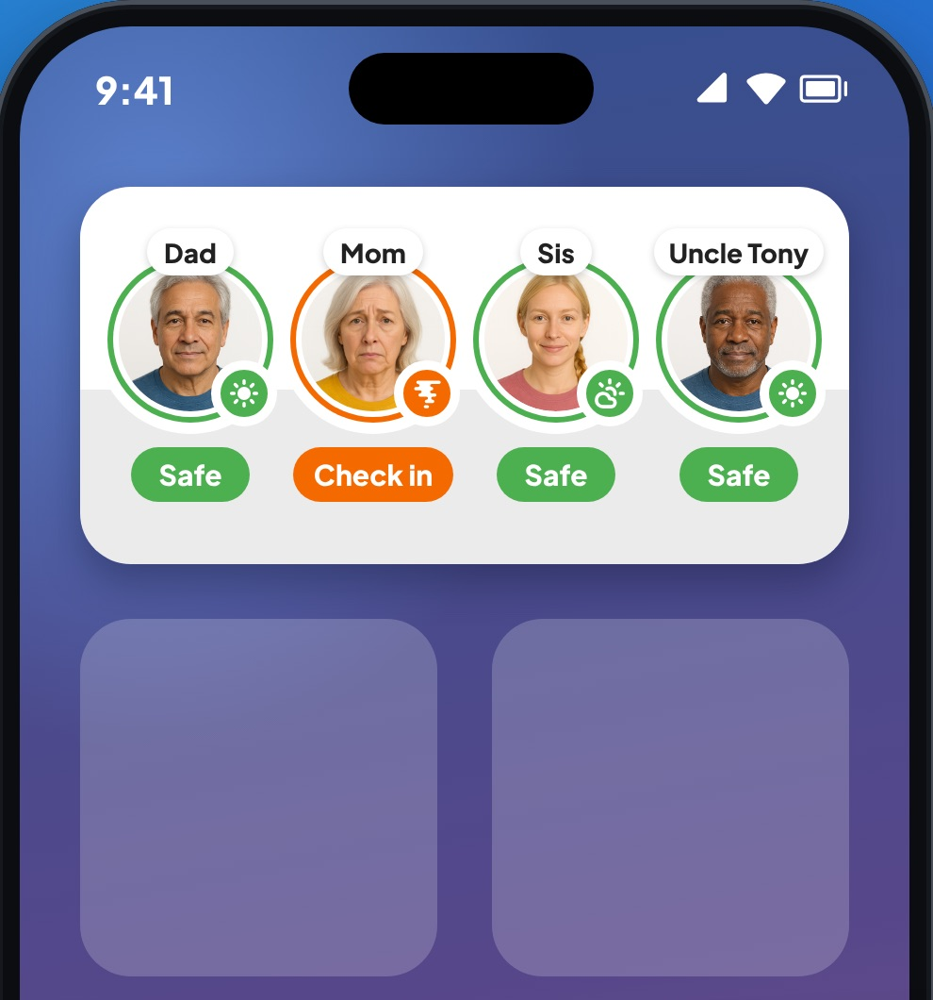

Add the Looop Home Screen Widget
See every Loved One at a glance without opening the app.

Add the widget to your Home Screen
Five quick steps. It takes about a minute.
Before you start: open the Looop app once and make sure you're signed in. That way the widget has your Loved Ones to show.
-
1
Touch and hold an empty spot on your Home Screen until the apps jiggle.
-
2
Tap Edit in the top-left corner, then Add Widget.
On iOS 17, tap the + button in the top-left corner instead.
-
3
Search for Looop (or scroll to it) and tap it.
-
4
Tap Add Widget.
Looop has one size, Medium. In the gallery it's called Loved Ones at a Glance.
-
5
Drag it where you want it, then tap Done.
What you'll see
- Up to four Loved Ones, each with their photo and the weather where they are.
- A green Safe or an orange Check in under each one.
- The widget follows whichever group you have open in the Looop app.
Move it to another Home Screen page
Want it on a different page? Drag it across.
-
1
Touch and hold the widget, then tap Edit Home Screen.
Or just keep holding until everything jiggles.
-
2
Drag the widget to the right or left edge of the screen. Wait for the next page to slide in.
-
3
Let go where you want it, then tap Done.
Want it in Today View too?
- Swipe right on your first Home Screen page.
- Scroll to the bottom and tap Edit.
- Add the Looop widget the same way as above.
Still stuck? Send us a note through our Get in Touch form. We read everything.